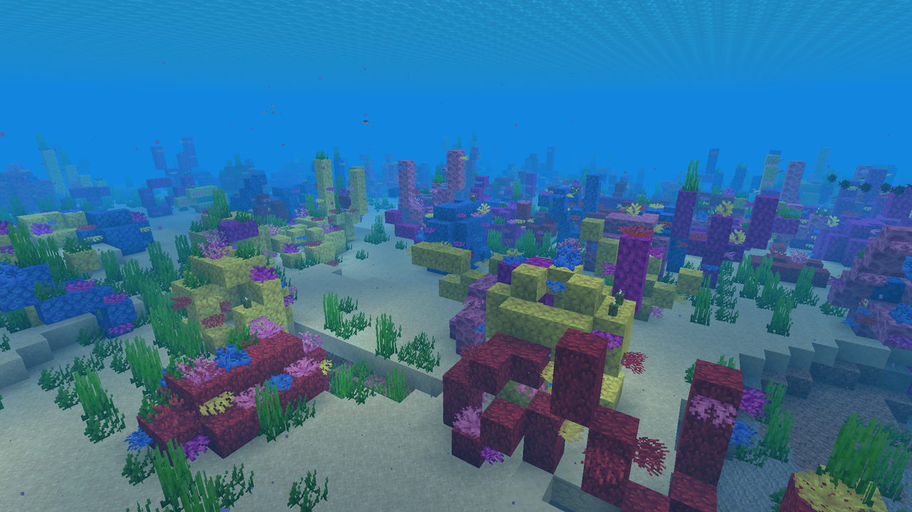

- Menu de Navegação
🌊 Oceano Quente
O Oceano Quente é uma variante oceânica reconhecida por suas águas de tom azul-esverdeado claro,
entre as mais bonitas do jogo. Esse bioma costuma aparecer em regiões próximas à linha do equador do
mundo, geralmente vizinho a savanas, selvas e desertos.
Diferente de outros oceanos, o Oceano Quente não possui uma variante profunda própria,
embora partes do seu terreno ainda possam atingir profundidades comparáveis às de oceanos
profundos.
Essa característica faz com que o bioma seja tratado de forma um pouco diferente pelo
gerador de mundo.
Características do ambiente

O fundo do mar é formado principalmente por areia e coberto por ervas marinhas, mas sem a
presença de algas gigantes, que são mais comuns em oceanos frios. A principal marca registrada do
bioma
são os recifes de coral, estruturas coloridas e ricas em vida marinha que só aparecem
naturalmente em águas quentes.
Apesar da beleza visual, navegar por essas águas exige atenção: os recifes podem esconder passagens estreitas e cavidades profundas, dificultando a orientação de quem explora sem um mapa ou uma bússola.
Fauna aquática
O Oceano Quente é o único bioma onde peixes tropicais coloridos aparecem em grande variedade,
incluindo dezenas de combinações diferentes de cores e padrões. Tartarugas marinhas também costumam
nadar
por suas águas, especialmente perto de praias próximas.
Golfinhos e peixes-guia também podem ser encontrados nessa região, sendo o peixe-guia particularmente útil para jogadores que buscam Ruínas Oceânicas ou naufrágios, já que ele pode guiar o jogador até esses pontos de interesse.
Recursos e estruturas
Além da vida marinha, o bioma pode abrigar naufrágios e ruínas oceânicas, cheios de baús
com itens raros. Corais também podem ser coletados com uma ferramenta encantada com Toque Suave e
usados
como decoração fora d'água.
Dificuldade de sobrevivência
- (Moderada)- (Alta, com pesca)
- (Moderada)
- (Moderado a Alto)
Resumo
O Oceano Quente é um dos biomas mais visualmente marcantes do Minecraft, ideal para quem gosta de
explorar recifes de coral e naufrágios. Encantamentos como Respiração e Afinidade Aquática tornam
essa exploração muito mais segura e agradável.